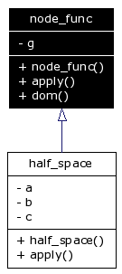

Main Page
|
Class Hierarchy
|
Alphabetical List
|
Class List
|
File List
|
Class Members
node_func Class Reference
Inheritance diagram for node_func:

[
legend
]
List of all members.
Public Member Functions
node_func
(const well_graph &init)
virtual double
apply
(leda_node n) const =0
const well_graph &
dom
() const
Detailed Description
Definition at line
327
of file
wellgrid.cpp
.
The documentation for this class was generated from the following file:
wellgrid.cpp
Generated on Чт 31. май 22:10:50 2007 by
1.4.3
 1.4.3
1.4.3